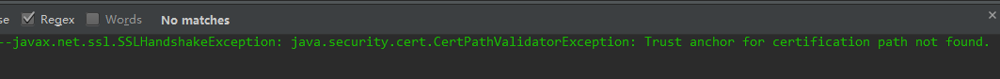
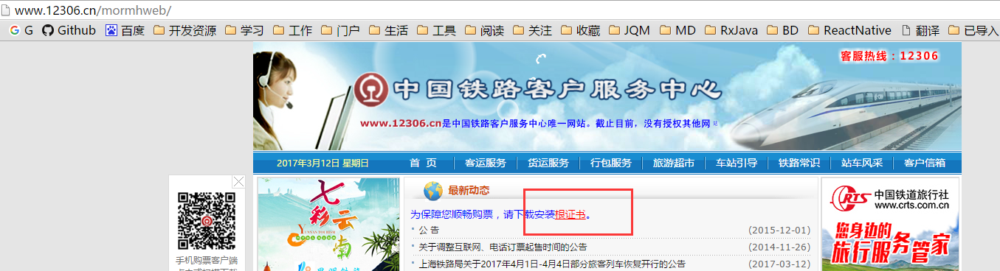
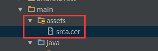
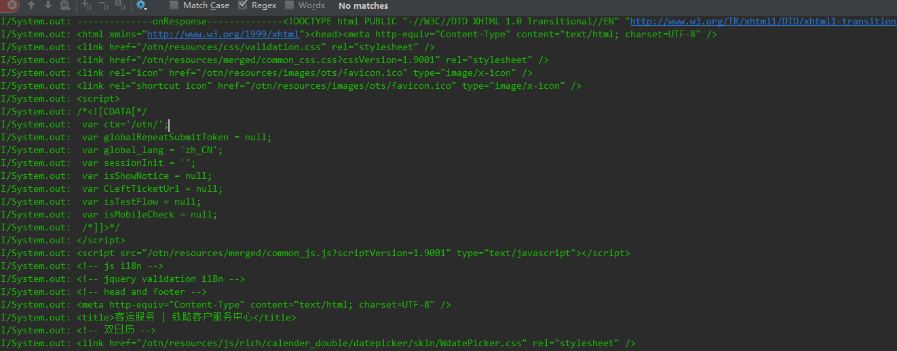

前言
很多公司考虑到安全问题，项目中都采用https加密协议进行数据传输。但是一些公司又不想花一笔钱去CA申请证书，所以就采用自签名的证书。
OkHttp默认是可以访问通过CA认证的HTTPS链接，例如百度首页也是https链接（https://www.baidu.com/）。 但是如果是你们公司自签名(即自己用keytool生成的证书，而不是采用通过CA认证的证书)的服务器，OkHttp是无法访问的，例如访问12306网站（https://kyfw.12306.cn/otn/） ，会报如下错误：

一、HTTPS的工作原理
HTTPS在传输数据之前需要客户端（浏览器）与服务端（网站）之间进行一次握手，在握手过程中将确立双方加密传输数据的密码信息。握手过程的简单描述如下：
- 浏览器将自己支持的一套加密算法、HASH算法发送给网站。
- 网站从中选出一组加密算法与HASH算法，并将自己的身份信息以证书的形式发回给浏览器。证书里面包含了网站地址，加密公钥，以及证书的颁发机构等信息。
- 浏览器获得网站证书之后，开始验证证书的合法性，如果证书信任，则生成一串随机数字作为通讯过程中对称加密的秘钥。然后取出证书中的公钥，将这串数字以及HASH的结果进行加密，然后发给网站。
- 网站接收浏览器发来的数据之后，通过私钥进行解密，然后HASH校验，如果一致，则使用浏览器发来的数字串使加密一段握手消息发给浏览器。
- 浏览器解密，并HASH校验，没有问题，则握手结束。接下来的传输过程将由之前浏览器生成的随机密码并利用对称加密算法进行加密。
握手过程中如果有任何错误，都会使加密连接断开，从而阻止了隐私信息的传输。
二、使用OKHTTP请求自签名的https服务器数据
以下我们使用12306网站为例
（1） 首先去12306网站首页下载证书 http://www.12306.cn/

（2） 将下载的证书srca.cer放到工程的assets文件夹下。

（3） 添加HTTPS工具类
import android.content.Context;
import java.io.IOException;
import java.io.InputStream;
import java.security.GeneralSecurityException;
import java.security.KeyStore;
import java.security.cert.Certificate;
import java.security.cert.CertificateFactory;
import java.util.Arrays;
import java.util.Collection;
import javax.net.ssl.KeyManagerFactory;
import javax.net.ssl.SSLContext;
import javax.net.ssl.SSLSocketFactory;
import javax.net.ssl.TrustManager;
import javax.net.ssl.TrustManagerFactory;
import javax.net.ssl.X509TrustManager;
import okhttp3.OkHttpClient;
public final class HTTPSUtils {
private OkHttpClient client;
public Context mContext;
/**
* 获取OkHttpClient实例
* @return
*/
public OkHttpClient getInstance()
{
return client;
}
/**
* 初始化HTTPS,添加信任证书
* @param context
*/
public HTTPSUtils(Context context) {
mContext = context;
X509TrustManager trustManager;
SSLSocketFactory sslSocketFactory;
final InputStream inputStream;
try {
inputStream = mContext.getAssets().open("srca.cer"); // 得到证书的输入流
try {
trustManager = trustManagerForCertificates(inputStream);//以流的方式读入证书
SSLContext sslContext = SSLContext.getInstance("TLS");
sslContext.init(null, new TrustManager[]{trustManager}, null);
sslSocketFactory = sslContext.getSocketFactory();
} catch (GeneralSecurityException e) {
throw new RuntimeException(e);
}
client = new OkHttpClient.Builder()
.sslSocketFactory(sslSocketFactory, trustManager)
.build();
} catch (IOException e) {
e.printStackTrace();
}
}
/**
* 以流的方式添加信任证书
*/
/**
* Returns a trust manager that trusts {@code certificates} and none other. HTTPS services whose
* certificates have not been signed by these certificates will fail with a {@code
* SSLHandshakeException}.
* <p>
* <p>This can be used to replace the host platform's built-in trusted certificates with a custom
* set. This is useful in development where certificate authority-trusted certificates aren't
* available. Or in production, to avoid reliance on third-party certificate authorities.
* <p>
* <p>
* <h3>Warning: Customizing Trusted Certificates is Dangerous!</h3>
* <p>
* <p>Relying on your own trusted certificates limits your server team's ability to update their
* TLS certificates. By installing a specific set of trusted certificates, you take on additional
* operational complexity and limit your ability to migrate between certificate authorities. Do
* not use custom trusted certificates in production without the blessing of your server's TLS
* administrator.
*/
private X509TrustManager trustManagerForCertificates(InputStream in)
throws GeneralSecurityException {
CertificateFactory certificateFactory = CertificateFactory.getInstance("X.509");
Collection<? extends Certificate> certificates = certificateFactory.generateCertificates(in);
if (certificates.isEmpty()) {
throw new IllegalArgumentException("expected non-empty set of trusted certificates");
}
// Put the certificates a key store.
char[] password = "password".toCharArray(); // Any password will work.
KeyStore keyStore = newEmptyKeyStore(password);
int index = 0;
for (Certificate certificate : certificates) {
String certificateAlias = Integer.toString(index++);
keyStore.setCertificateEntry(certificateAlias, certificate);
}
// Use it to build an X509 trust manager.
KeyManagerFactory keyManagerFactory = KeyManagerFactory.getInstance(
KeyManagerFactory.getDefaultAlgorithm());
keyManagerFactory.init(keyStore, password);
TrustManagerFactory trustManagerFactory = TrustManagerFactory.getInstance(
TrustManagerFactory.getDefaultAlgorithm());
trustManagerFactory.init(keyStore);
TrustManager[] trustManagers = trustManagerFactory.getTrustManagers();
if (trustManagers.length != 1 || !(trustManagers[0] instanceof X509TrustManager)) {
throw new IllegalStateException("Unexpected default trust managers:"
+ Arrays.toString(trustManagers));
}
return (X509TrustManager) trustManagers[0];
}
/**
* 添加password
* @param password
* @return
* @throws GeneralSecurityException
*/
private KeyStore newEmptyKeyStore(char[] password) throws GeneralSecurityException {
try {
KeyStore keyStore = KeyStore.getInstance(KeyStore.getDefaultType()); // 这里添加自定义的密码，默认
InputStream in = null; // By convention, 'null' creates an empty key store.
keyStore.load(in, password);
return keyStore;
} catch (IOException e) {
throw new AssertionError(e);
}
}
}（4） 代码中请求
public void getHttpsHtml(View view) {
Request request = new Request.Builder()
.url("https://kyfw.12306.cn/otn/")
.build();
HTTPSUtils httpsUtils = new HTTPSUtils(this);
httpsUtils.getInstance().newCall(request).enqueue(new Callback() {
@Override
public void onFailure(Call call, IOException e) {
System.out.println("--------------onFailure--------------" + e.toString());
}
@Override
public void onResponse(Call call, Response response) throws IOException {
System.out.println("--------------onResponse--------------" + response.body().string());
}
});
}（5） 最后能打印出这些信息就说明请求成功啦！

注意：别忘了加权限和依赖okhttp库
Demo地址：https://github.com/wildma/okhttps
参考博客：http://blog.csdn.Net/lmj623565791/article/details/48129405